Scatola · S2·F3 · 213 partite
A Knock at the Door60,6% di vittorie
🇪🇸 ES · 🇬🇧 EN · 🇫🇷 FR · 🇩🇪 DE · 🇮🇹 IT
📖 Guida di The Intruders (killer) · Guida di Wingard Cottage (luogo)
The Intruders su Wingard Cottage. Su 213 partite registrate si vince nel 60,6% dei casi, 4,7 punti sotto la media del gioco (65,3%).
Cosa la rende particolare
3 killer contemporaneamente, uno dei quali è sempre quello "attivo", e cambia continuamente. Un proprio sistema di creazione delle armi. Nonostante i tre killer, è sorprendentemente facile da seguire. Non ti sovrasta mai.
| Livello | Avanzato |
| La mappa | Il miglior formato multi-killer, con crafting |
Come funziona The Intruders
- Un trio di killer con 6 di vita ciascuno; iniziano a Horror 3 nello stesso spazio.
- La Killer Action della loro scheda è per «tutti i killer»: ognuno, dall'alto in basso, attacca chi si trova nel suo spazio. Non si muovono durante questa azione.
- Solo l'Active Killer risolve le Terror Cards.
- L'Active Killer cambia quando un altro viene attaccato o danneggiato, per effetto di carte, o quando l'attivo muore.
Riassunto dalla pagina della Final Girl Wiki (CC BY-SA). Chiarimento del designer su BGG.
La mappa: Wingard Cottage
20 spazi (10 interni e 10 esterni) e 3 uscite (nord-est, sud-ovest e sud-est, quest'ultima indicata come Driveway). Spazi di ricerca: Boathouse, Garage e Shed; altri spazi con nome: Bathroom, Family Room, Foyer, Kitchen, Lakefront, Laundry Room, Porch e due Bedrooms. Il Lake a nord-ovest è indicato ma non visitabile.
- In quattro spazi puoi spendere Time per prendere il loro Supply Item: Discarded Tools (Garage), Nails (Shed), Rope (Boathouse) e Wood (spazio a nord del Garage).
- Combinando i Supply Items giusti con l'Item e il Time richiesti da una ricetta si crea il Crafted Item corrispondente.
- Gli Items e Supply Items usati vengono scartati.
Carte proprie: Supply Items (4), Crafted Items
Riassunto dalla pagina della Final Girl Wiki (CC BY-SA).
Il killer
The Intruders ha il 62,6% di vittorie su tutte le mappe, su 944 partite. Qui, su Wingard Cottage, la cifra è 60,6%.
Setup
Dal più duro al più facile. Almeno 20 partite.
| Setup | Vittorie | Partite |
|---|---|---|
| Couples Weekend | 65,3% | 239 |
| Fishing Trip | 66,8% | 178 |
| Grad Party | 67,4% | 184 |
| Special Occasion | 73,0% | 196 |
| Dysfunctional Family | 73,4% | 188 |
Dark Powers
| Dark Power | Vittorie | Partite |
|---|---|---|
| Unrevealed | 52,4% | 63 |
| No Remorse | 60,1% | 233 |
| Won't Stay Down | 60,6% | 170 |
| Maskaphobia | 62,4% | 218 |
| Strength in Numbers | 69,8% | 248 |
Carte Finale
| Carta Finale | Vittorie | Partite |
|---|---|---|
| Unrevealed | 28,0% | 200 |
| We Know Where You Live | 58,3% | 84 |
| Release the Beast | 66,7% | 216 |
| You're Gonna Die | 68,0% | 206 |
| Hunt Sweet Hunt | 87,3% | 221 |
Dove trovarla
Link di affiliazione: se compri, ricevo una piccola commissione senza costi in più per te. Non cambia quello che dicono i dati sopra.
Come iniziare la partita
Le quattro aperture, con quale usare in base alla preparazione, sono nelle strategie di apertura.
📖 Guida di The Intruders (killer)
Va bene con qualsiasi luogo. ↑ su · Scheda di The Intruders → · Guida di Wingard Cottage (luogo)
⌛ = Tempo · ✴ = danno · ❤️ = recuperare vita · 💔 = perdere vita · 🎭 = l'Orrore sale · ⊘🎭 = l'Orrore scende · 🎲 = dado · 🩸 = Bloodlust ·  = il segnalino di Killer Attivo SALE al Killer successivo ·
= il segnalino di Killer Attivo SALE al Killer successivo ·  = SCENDE al Killer successivo
= SCENDE al Killer successivo
Errori frequenti
- Se attacchi un Killer, diventa l'Attivo anche senza fargli danno. Lo stesso se usi una carta per danneggiarlo.
- Nella fase di Panico fuggono le Vittime in uno spazio con qualsiasi Killer, non solo l'Attivo, se in quel turno è morta una Vittima.
- Con un Minor Dark Power in gioco, il danno a qualsiasi Killer va prima su quella carta.
- Ogni Killer ha il suo segnalino di Final Health, ma il bonus di +1 🎲 lo ricevi una sola volta.
- Se muore un Killer che ha ancora il segnalino nero di Final Health e ne resta un altro sul tabellone, la fase non finisce subito: si corica la figura e si continua.
Preparazione speciale
- Metti le tre figure di Killer (la rossa della scatola base, la nera e la grigia) nello spazio di partenza del Killer della carta Setup.
- Ogni Killer riceve la sua vita iniziale, con un segnalino di Final Health ciascuno.
- Metti il segnalino Killer Attivo sul tabellone del Killer, nel cerchio di Trish (la rossa).
- Secondo la wiki partono con 3 di Orrore e 6 di vita ciascuno.
Il Killer Attivo
- Gli Intruders sono 3 Killer: Trish, Baghead e Zeke. Solo uno è attivo quando si muove (stivale), attacca (coltello) o si piazza il Killer.
- L'Attivo è quello con il segnalino nel suo cerchio sul tabellone del Killer. Gli altri due restano fermi.
Come cambia il Killer Attivo
- Può cambiare più volte nello stesso turno. Ci sono 3 modi:
- 1. Quando attacchi un Killer (che tu gli faccia danno o no) o usi una carta per danneggiarlo, diventa subito l'Attivo.
- 2. Con l'icona
 (K con la metà rossa in alto) il segnalino SALE al Killer successivo; con
(K con la metà rossa in alto) il segnalino SALE al Killer successivo; con  (metà rossa in basso) SCENDE. Se è sul più alto e deve salire, fa il giro fino a quello più in basso, e viceversa.
(metà rossa in basso) SCENDE. Se è sul più alto e deve salire, fa il giro fino a quello più in basso, e viceversa. - 3. Quando muore l'Attivo, il segnalino passa al Killer vivo più in alto.
- I Killer morti si saltano quando si cerca il successivo.
Esempio del regolamento: Ginny spara a Trish con il Sawed-Off Shotgun e le infligge 3 ✴; Trish diventa l'Attiva e le resta 1 di vita. Nella fase del Killer Trish attacca e Ginny la finisce con un Counterattack: si corica la figura di Trish (senza ancora rivelare il suo segnalino di Final Health) e il segnalino di Killer Attivo passa al Killer vivo più in alto, Baghead. La carta Terrore è "They're everywhere!": la 1ª azione la fa Baghead; la 2ª inizia con  e, dato che Trish è a terra, il segnalino fa il giro fino a Zeke; la 3ª, di nuovo
e, dato che Trish è a terra, il segnalino fa il giro fino a Zeke; la 3ª, di nuovo  , torna a Baghead. Alla fine della fase si rivela il segnalino di Final Health di Trish: è vuoto, quindi Trish lascia il tabellone. Se avesse avuto vita, si sarebbe rialzata.
, torna a Baghead. Alla fine della fase si rivela il segnalino di Final Health di Trish: è vuoto, quindi Trish lascia il tabellone. Se avesse avuto vita, si sarebbe rialzata.
Tutti i Killer, panico e Minor Dark Powers
- «Tutti i Killer»: ignora il segnalino e risolvi l'effetto per ognuno, dal più alto del tabellone del Killer verso il basso. Il segnalino non si muove.
- Panico: le Vittime in uno spazio con qualsiasi Killer fuggono nella fase di Panico se in quel turno è morta una Vittima.
- Minor Dark Powers: valgono per tutti i Killer. Quando uno subisce danno, va prima sulla carta di Minor Dark Power.
Morte di un Intruder e Final Health
- Se un Killer con il segnalino nero di Final Health perde l'ultima vita e ne resta un altro sul tabellone, corica la figura, cambia il Killer Attivo e finisci la fase in corso.
- A fine fase rivela il suo segnalino di Final Health. Vuoto: è morto davvero e lascia il tabellone. Con vita: recupera la vita come sempre, sostituisci il segnalino nero con uno bianco e rialza la figura.
- Anche con 3 segnalini di Final Health, il bonus di +1 🎲 si riceve una volta sola.
Finali (secondo la wiki)
- Hunt Sweet Hunt: l'Attivo punta te o una Vittima, si muove due volte, attacca e . Ogni attacco fa 1 ✴ in più.
- You're Gonna Die: l'Attivo punta, si muove e attacca; ; poi il nuovo Attivo punta, si muove e attacca.
- Release the Beast: tutti i Killer puntano, si muovono e attaccano. Da quel momento tutti contano come Attivi fino a fine partita; risolvi le loro azioni dall'alto in basso.
- We Know Where You Live (Epic Finale): l'Attivo punta, si muove, attacca due volte e . Quando viene rivelata, tutti i Killer puntano, si muovono e attaccano.
Poteri oscuri
- No Remorse: tira un dado all'inizio di ogni Mantenimento. Se il risultato supera il numero di Killer, 🩸.
- Strength in Numbers: ogni attacco fa 1 ✴ in più per ogni altro Killer nello stesso spazio o in uno adiacente.
- Maskaphobia: una volta per turno, quando un Killer entra nel tuo spazio, 🎭. Non puoi comprare Focus con un Killer nel tuo spazio.
- Won't Stay Down (Epic Dark Power): quando muore un Killer, recupera subito 2 vite normali e un segnalino di Final Health a caso. Poi rimuovi questa carta dal gioco.
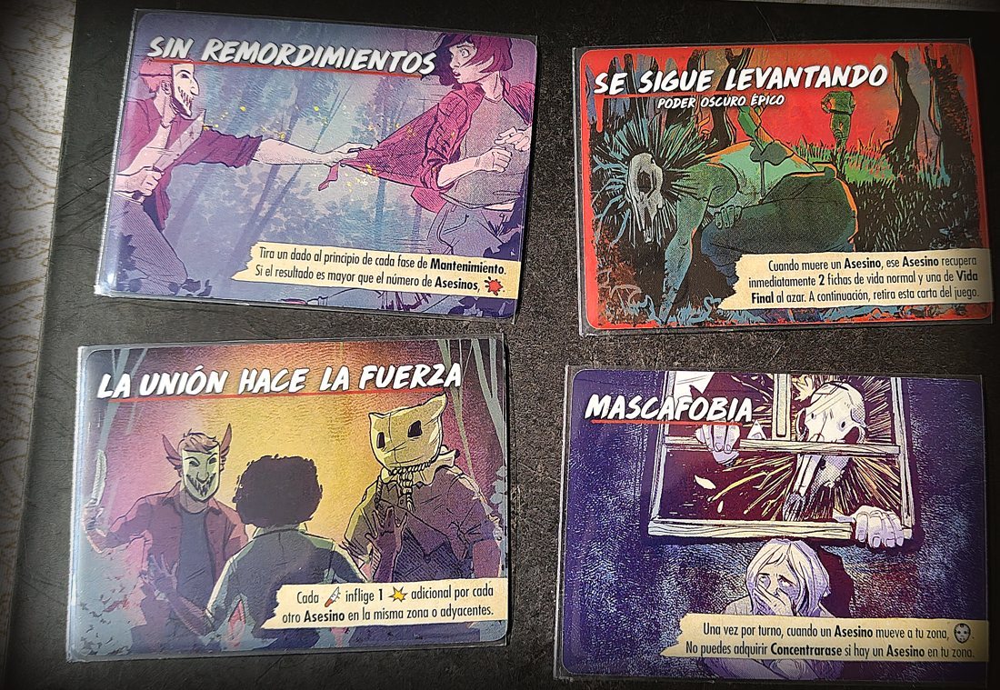
Carte Terrore da spiegare (secondo la wiki)
- "They will hunt you" (x2): metti l'Attivo nel tuo spazio e ti attacca. Poi e il nuovo ti punta e si muove; di nuovo e lo stesso.
- "Where are they coming from?": l'Attivo punta, si muove due volte, attacca e . Se non ci sono Vittime, scartala e pescane un'altra. Altrimenti metti l'Attivo con la Vittima più lontana e la attacca.
- "Go away!!!": ogni Killer nel tuo spazio o in uno con una Vittima subisce 1 ✴. Ognuno danneggiato così punta te o una Vittima e attacca. Poi pesca un Evento.
- "They're everywhere!": tre azioni di fila, con prima della 2ª e della 3ª. È quella dell'esempio del regolamento.
- Amphetamines (Minor Dark Power, 2 di vita bonus): all'inizio della fase del Killer, il Killer con meno vita ne recupera 2.
- Coordinated Attack (Minor Dark Power, 2 di vita bonus): alla fine di ogni fase del Killer, e il nuovo Attivo punta te o una Vittima, si muove e attacca.
📖 Guida di Wingard Cottage (luogo)
Va bene con qualsiasi killer. ↑ su · Guida di The Intruders (killer)
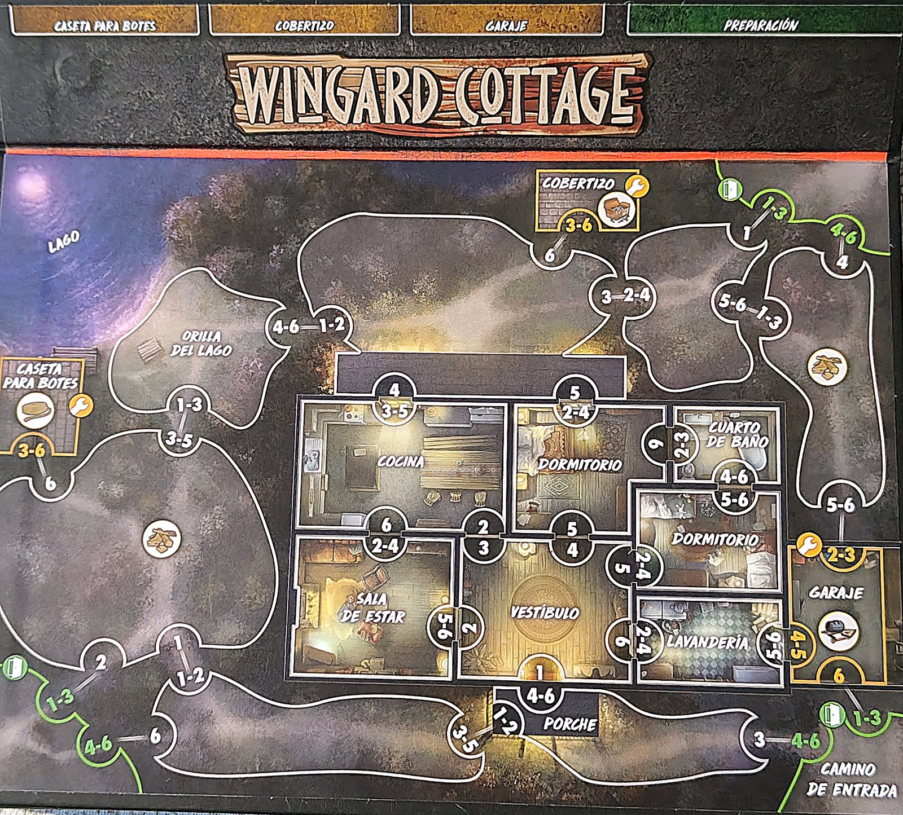
Errori frequenti
- Un Supply Item si prende solo se sei nel suo spazio e paghi ⌛: di passaggio non vale.
- Supply Items e Crafted Items scartati tornano a faccia in su nell'area di gioco, pronti per essere ripresi o rifabbricati.
- Se fabbrichi con un oggetto a usi limitati, l'oggetto fabbricato conserva gli usi rimasti (Shotgun → Sawed-Off Shotgun, Trashcan Lid → Porcupine).
- Casa e Interni non sono la stessa cosa: il Garage è Casa; lo Shed e il Boathouse sono Interni ma non Casa.
Preparazione speciale
- Metti le quattro carte Supply Item a faccia in su nell'area di gioco.
- Mescola le carte Crafted Item e rivela le prime quattro a faccia in su nell'area di gioco.
Casa, Interni ed Esterno
- Casa: Kitchen, le 2 Bedroom, Bathroom, Family Room, Foyer, Laundry Room e Garage.
- Interni: tutti gli spazi della casa più lo Shed e il Boathouse.
- Esterno: tutti gli spazi che non sono Interni.
Supply Items
- Sono 4: Discarded Tools nel Garage, Nails nello Shed, Rope nel Boathouse e Wood negli spazi con l'icona del legno.
- Se sei in uno spazio con la sua icona, puoi prendere la carta pagando ⌛. Non vale se sei solo di passaggio.
- Va in uno slot dello Zaino. Servono solo per fabbricare.
- Quando la scarti, torna a faccia in su nell'area di gioco e si può riprendere.
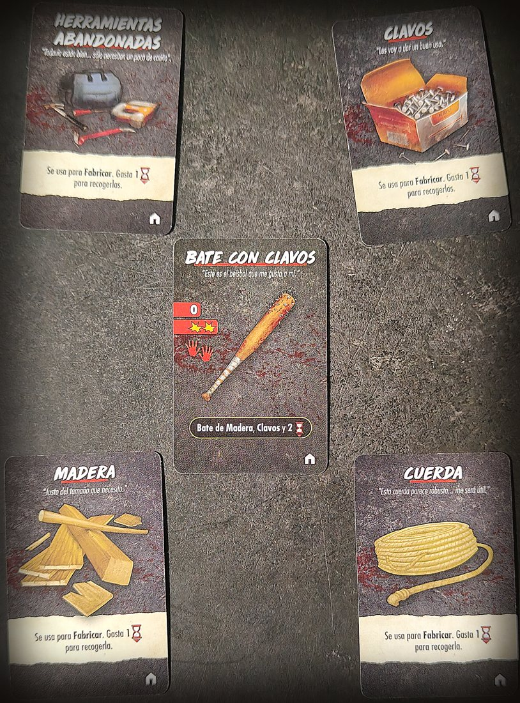
Crafted Items
- Fabbricare: prendi un Crafted Item disponibile scartando gli oggetti e i Supply Items indicati sulla carta e pagando il ⌛ indicato.
- L'oggetto fabbricato va in mano o in uno slot dello Zaino. Quando lo scarti, torna a faccia in su e si può fabbricare di nuovo.
- Se per fabbricare scarti un oggetto a usi limitati, il nuovo conserva quegli usi: una Shotgun con 1 uso dà un Sawed-Off Shotgun con 1 uso. Lo stesso con la Trashcan Lid e il Porcupine.
- All'inizio ne sono disponibili solo 4. Blueprint e l'evento Brainstorming ne aggiungono altri.
Esempio del regolamento: Ava ha una Wooden Bat e dei Nails. Spende 2 ⌛, fabbrica la Nail Bat e la mette in mano. Scarta la Wooden Bat e rimette i Nails a faccia in su insieme agli altri Supply Items.
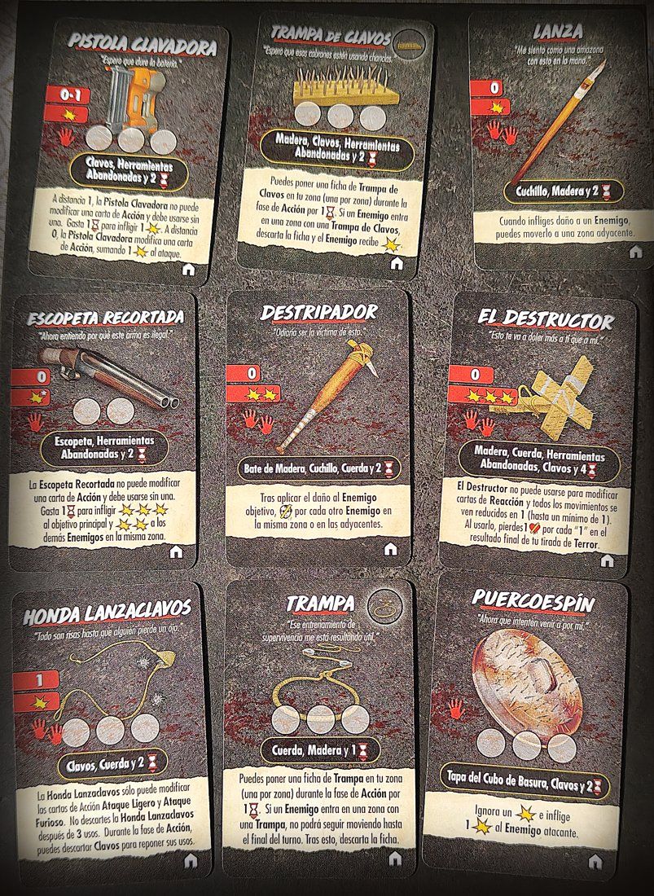
Carte Terrore del luogo (secondo la wiki)
- "Now get the hell out of my house!": se non sei in casa, scartala e pescane un'altra. Se ci sei, pesca un Evento e metti il Killer nel tuo spazio. Se hai Weak Attack in mano, puoi giocarla; altrimenti ti attacca.
- "Is Tammy home?": metti il Killer sul Porch. 🎭.
- "They can't get in here. Right?": 2 nuove Vittime nella Bedroom. 🎭.
- "What happened while we were gone?": 3 nuove Vittime al Boathouse. Pesca un Evento.
- "We were passing by and thought we heard a scream.": 2 nuove Vittime sul Porch, 🎭 e pesca un Evento.
- Con gli Intruders, «il Killer» di queste carte è il Killer Attivo.
Preparazioni
K = partenza del Killer · figura gialla = la Final Girl · numeri = Vittime per spazio.
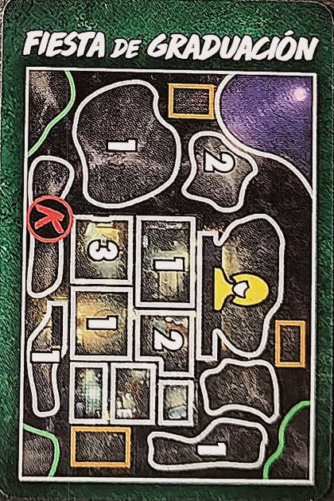
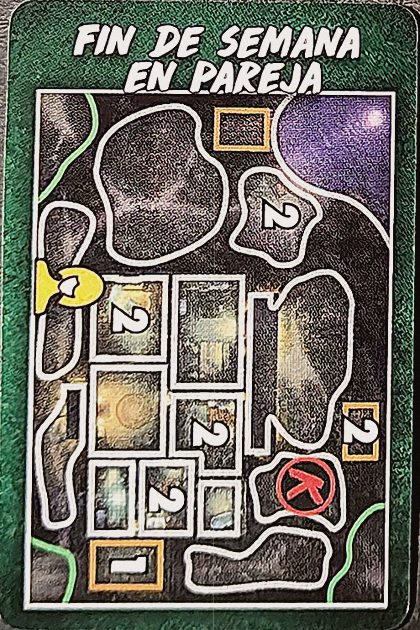
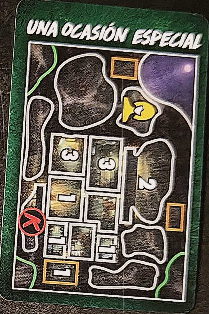
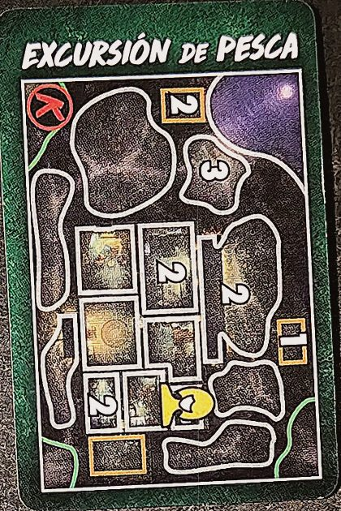
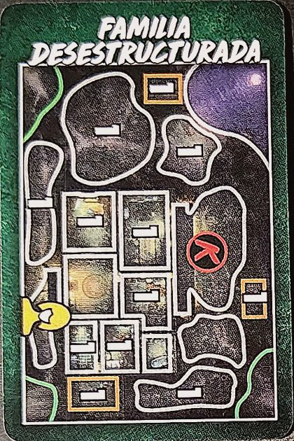
Oggetti
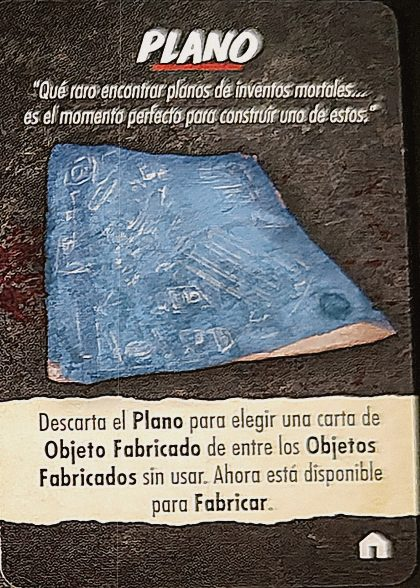
x2. Scartalo per scegliere un Crafted Item tra quelli inutilizzati: ora si può fabbricare.
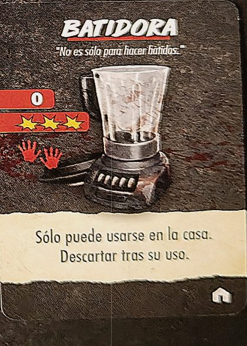
Arma · gittata 0 · 3 ✴ · 2 mani. Si usa solo in casa. Si scarta dopo l'uso.
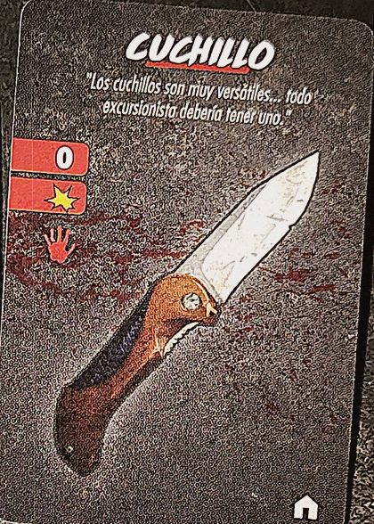
x2. Arma · gittata 0 · 1 ✴ · 1 mano.
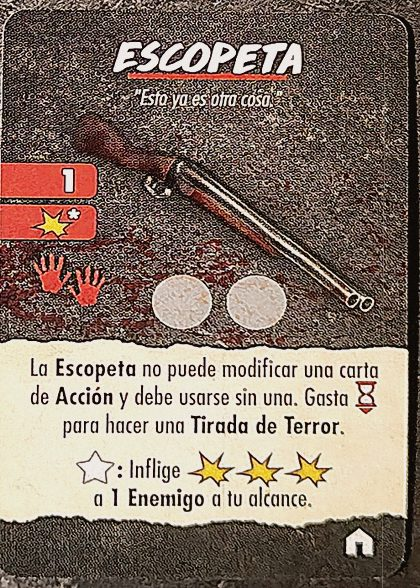
Arma · gittata 1 · 2 mani · 2 usi. Non modifica una carta Azione: si usa senza. Spendi ⌛ per un tiro di Orrore; con un successo, 3 ✴ a 1 Nemico a portata.
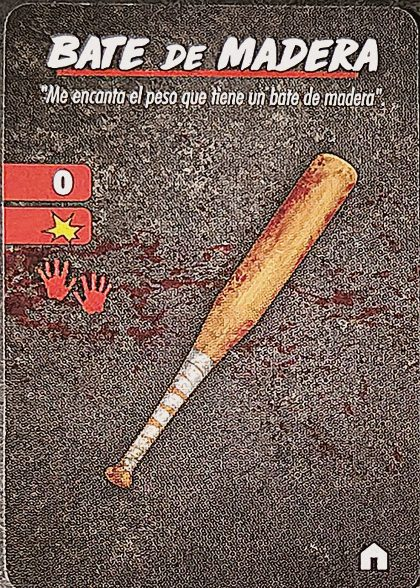
x2. Arma · gittata 0 · 1 ✴ · 2 mani.
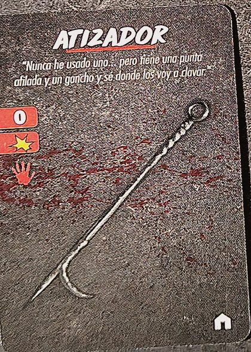
Arma · gittata 0 · 1 ✴ · 1 mano.
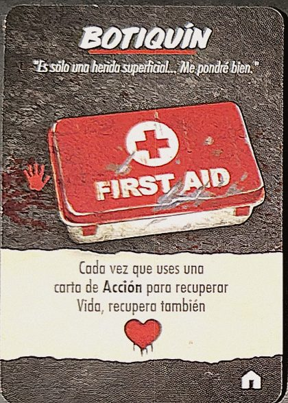
1 mano. Ogni volta che usi una carta Azione per recuperare vita, recuperi ❤️ in più.
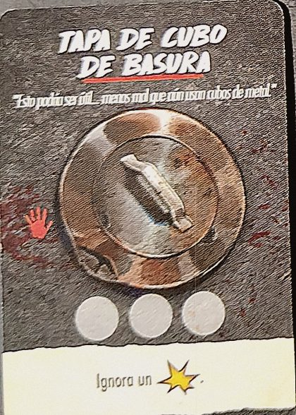
1 mano · 3 usi. Ignora 1 ✴.
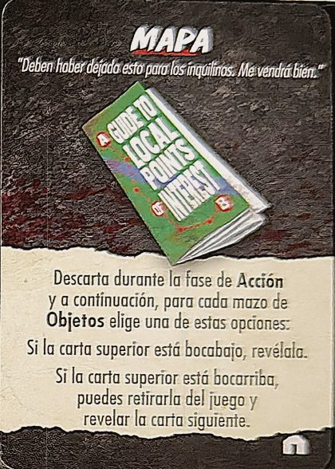
Scartala nella fase Azione. Poi, per ogni mazzo di Oggetti: se la carta in cima è coperta, rivelala; se è scoperta, puoi rimuoverla dal gioco e rivelare la successiva.
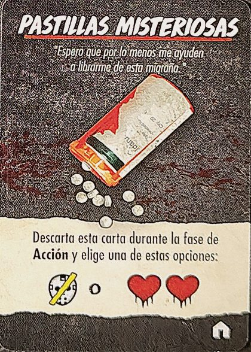
Scartale nella fase Azione e scegli: ⊘🎭 o ❤️❤️.
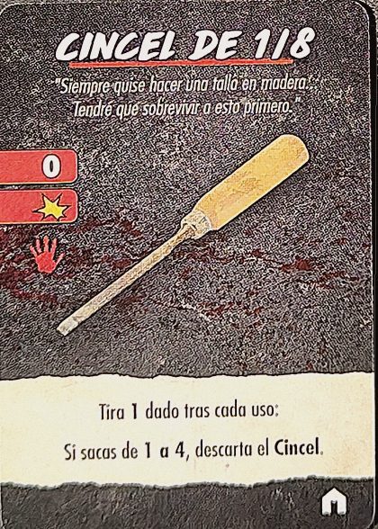
Arma · gittata 0 · 1 ✴ · 1 mano. Tira 1 dado dopo ogni uso: con 1-4, scartalo.
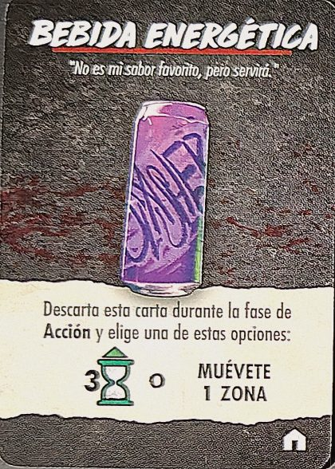
Scartala nella fase Azione e scegli: 3 ⌛ o muoviti di 1 spazio.
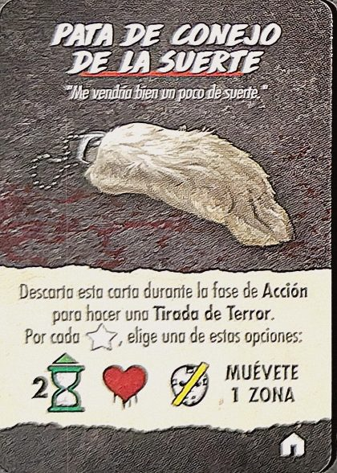
Scartala nella fase Azione per un tiro di Orrore. Per ogni successo scegli: 2 ⌛, ❤️, ⊘🎭 o muoviti di 1 spazio.
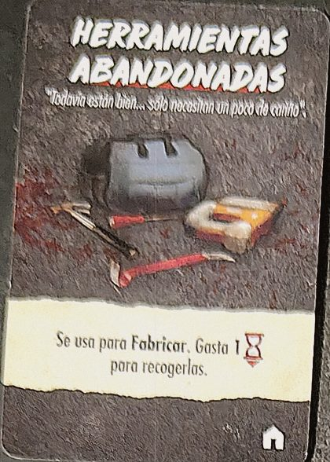
Supply Item. Serve per fabbricare. ⌛ per prenderli (Garage).
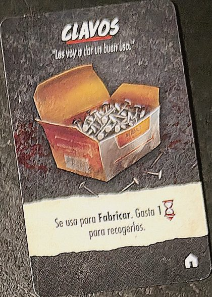
Supply Item. Serve per fabbricare. ⌛ per prenderli (Shed).
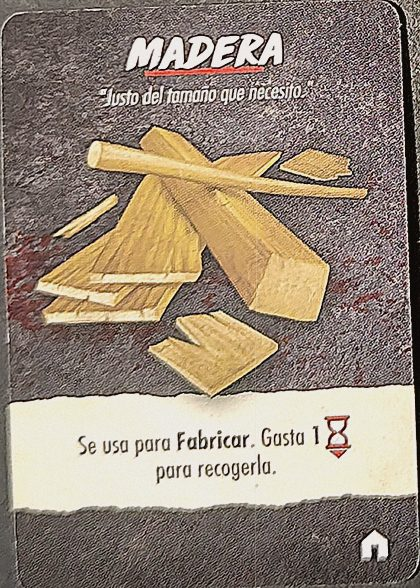
Supply Item. Serve per fabbricare. ⌛ per prenderlo (spazi con l'icona del legno).
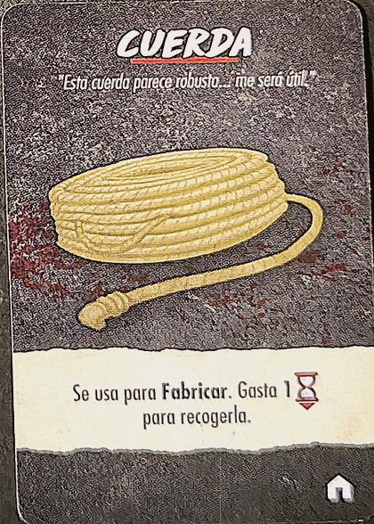
Supply Item. Serve per fabbricare. ⌛ per prenderla (Boathouse).
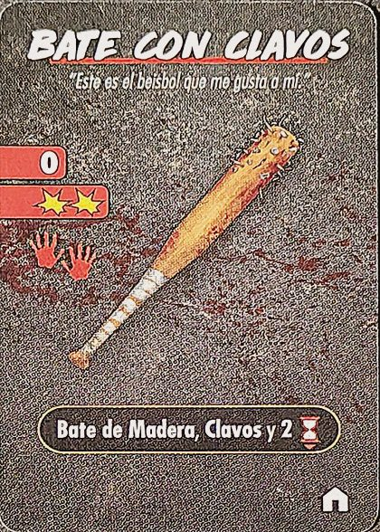
Fabbricato: Wooden Bat + Nails + 2 ⌛. Arma · gittata 0 · 2 ✴ · 2 mani.
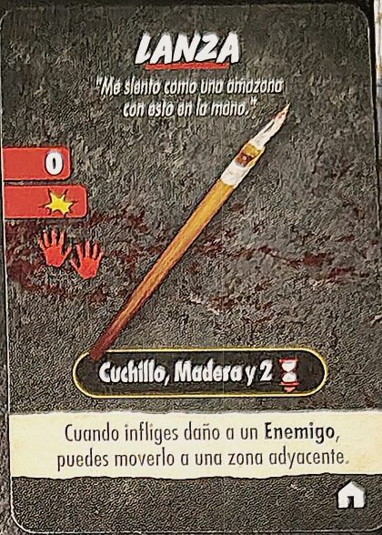
Fabbricato: Knife + Wood + 2 ⌛. Arma · gittata 0 · 1 ✴ · 2 mani. Quando danneggi un Nemico, puoi spostarlo in uno spazio adiacente.
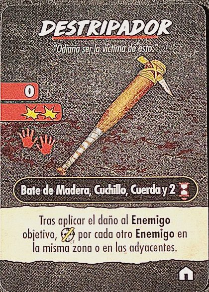
Fabbricato: Wooden Bat + Knife + Rope + 2 ⌛. Arma · gittata 0 · 2 ✴ · 2 mani. Dopo il danno al Nemico bersaglio, ⊘🎭 per ogni altro Nemico nello stesso spazio o in quelli adiacenti.
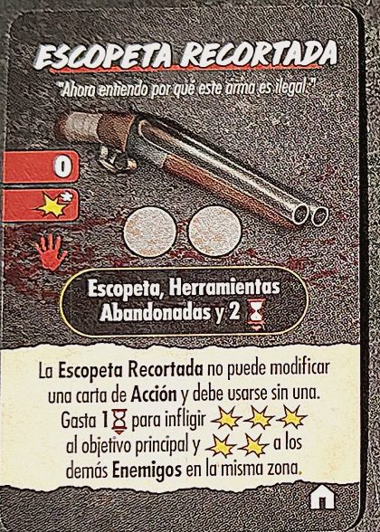
Fabbricato: Shotgun + Discarded Tools + 2 ⌛. Arma · gittata 0 · 1 mano · 2 usi. Non modifica una carta Azione. Spendi ⌛ per fare 3 ✴ al bersaglio principale e 2 ✴ agli altri Nemici dello spazio.
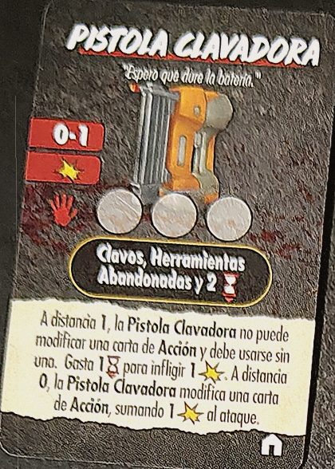
Fabbricato: Nails + Discarded Tools + 2 ⌛. Arma · gittata 0-1 · 1 ✴ · 1 mano · 3 usi. A gittata 1 non modifica una carta Azione: spendi ⌛ per fare 1 ✴. A gittata 0 modifica la carta Azione e aggiunge 1 ✴ all'attacco.
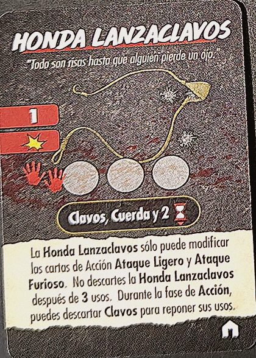
Fabbricato: Nails + Rope + 2 ⌛. Arma · gittata 1 · 1 ✴ · 2 mani · 3 usi. Modifica solo Weak Attack e Furious Strike. Non si scarta dopo 3 usi: nella fase Azione puoi scartare Nails per ricaricarli.
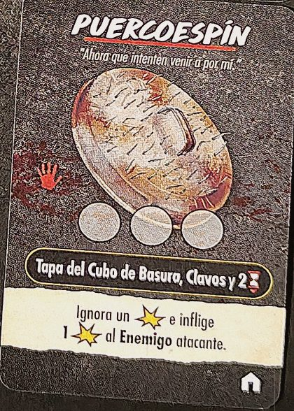
Fabbricato: Trashcan Lid + Nails + 2 ⌛. 1 mano · 3 usi. Ignora 1 ✴ e fai 1 ✴ al Nemico che attacca.
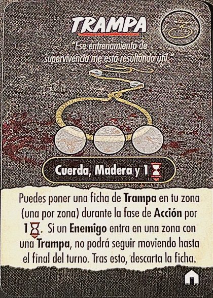
Fabbricato: Rope + Wood + 1 ⌛. 3 usi. Nella fase Azione, per ⌛, metti un segnalino Snare nel tuo spazio (uno per spazio). Se un Nemico entra, non può più muoversi fino a fine turno. Poi scarta il segnalino.
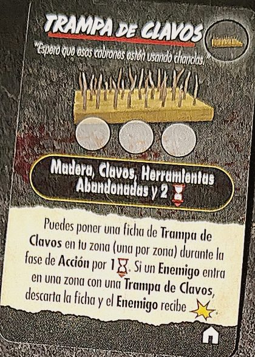
Fabbricato: Wood + Nails + Discarded Tools + 2 ⌛. 3 usi. Nella fase Azione, per ⌛, metti un segnalino nel tuo spazio (uno per spazio). Se un Nemico entra, scarta il segnalino e il Nemico subisce ✴.
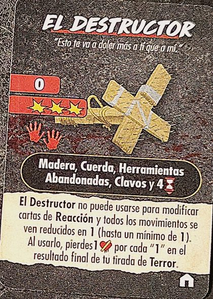
Fabbricato: Wood + Rope + Discarded Tools + Nails + 4 ⌛. Arma · gittata 0 · 3 ✴ · 2 mani. Non modifica le carte Reazione e tutto il tuo movimento cala di 1 (minimo 1). Quando lo usi, 💔 per ogni «1» nel risultato finale del tuo tiro di Orrore.
Mancano ancora le foto delle carte Finale, delle carte Terrore (killer e luogo), dei Minor Dark Powers e del tabellone del Killer: quei testi vengono dalla wiki.
Eventi di Wingard Cottage
- Getting Resourceful
- Fabbricare costa ⌛ in meno.
- Brainstorming
- Scegli 2 Crafted Items tra quelli inutilizzati: ora si possono fabbricare. Scarta.
- Battle Ready
- Prendi le carte Oggetto messe da parte nella preparazione e rivelale una alla volta finché esce un'arma (la tieni) o finiscono. Scarta.
- Booby Traps
- Tutte le Vittime dentro casa vanno nel panico. Ogni Vittima che esce di casa muore. Scarta.
- Loser Boyfriend
- La Vittima più lontana da te è il tuo Boyfriend, che aiutava di nascosto il Killer. I Nemici non possono puntarlo né ucciderlo, tu sì. Se lo uccidi: ⊘🎭⊘🎭⊘🎭 e la Bloodlust non sale. Se lascia il gioco, scarta la carta.
- Another Way Out
- Metti il Boat sul Lake e il Neighbor nella Family Room. Il Neighbor ha le chiavi: quando è sul Lakefront, lui e fino a 3 Vittime lì possono uscire ed essere salvati. Se il Neighbor lascia il gioco, scarta la carta e il Boat.
- Home Security
- Tienila finché la usi. Si attiva in una fase Azione senza Nemici in casa. Attiva, i Nemici non possono entrare: quando uno ci prova, metti un segnalino sulla carta e non si muove. L'allarme si disattiva con 3 segnalini o quando tu o una Vittima entrate o uscite di casa; allora scartala.
- Kick-Scooter
- Metti lo Scooter nello spazio esterno più vicino. Si muove con te, ma resta nell'ultimo spazio esterno se entri all'interno. Una volta per fase Azione puoi usarlo per muoverti fino a 2 spazi; le Vittime non ti seguono in quel movimento.
- Marked for Death
- Metti l'Outsider nel Bathroom. Quando il Killer deve scegliere un bersaglio, sceglie l'Outsider. Lungo la strada uccide una Vittima in ogni spazio che attraversa, compresi quelli di partenza e arrivo. Se l'Outsider lascia il gioco, scarta la carta.
- Escape Attempt
- La Vittima più vicina al Driveway corre verso l'uscita. Tira 1 dado: con 5-6 avanza di uno spazio verso il Driveway (anche se c'è un Killer); con 1-4 muore. Ripeti finché arriva (salva) o muore. Scarta.
Testo nostro, dal regolamento, dalle carte e dalla wiki. Nomi delle carte in inglese. Un errore? Faccelo sapere.